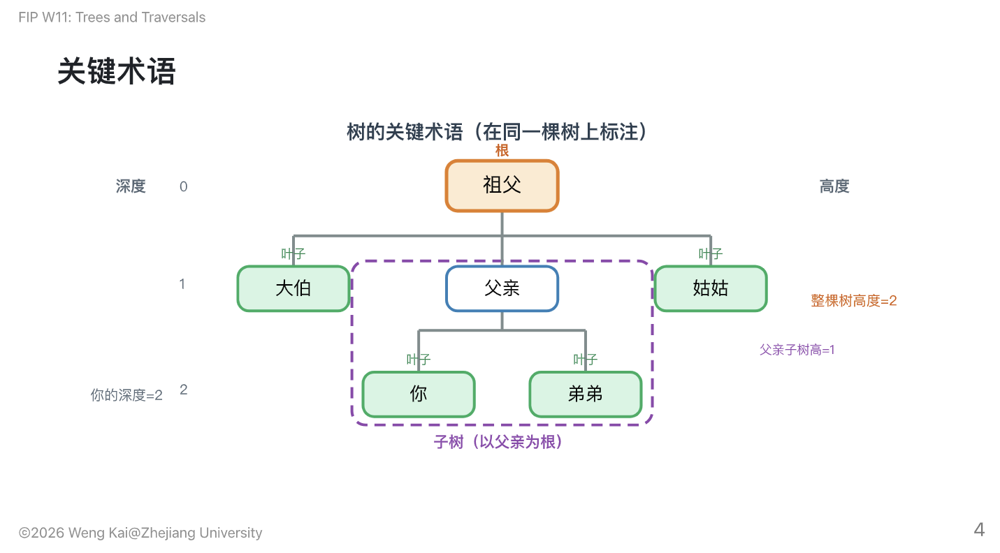

FIP W11 · 树及其遍历
理论课内容
课程材料：26FIP11 树及其遍历.pdf
Recap
容器(Container)和数据结构(Data Structure)：描述的东西差不多，只是从不同的维度出发。 当前我们学过的数据结构：
| DS | array | linked list | hash |
|---|---|---|---|
| Python type | list(tuple) | deque | set/dict |
| 拓展实现 | stack/queue/deque/cq/pq | stack/queue/deque/cq/pq | / |
树
树的概念
描述层次关系的数据结构。树中有一些关键的术语：
- 根：最顶端结点，无父结点
- 叶子：没有后代的结点
- 深度：某个结点到根的距离
- 高度：某结点到其最远叶子的路径边数；整棵树的高度是根结点的高度
- 子结点：直接下层
- 父结点：直接上层
- 子树：以某个结点为根的整颗树

深度和高度都按 边数 计算：根的深度为0，叶子的高度为0；只有根的树高度为0。同一父结点的子结点称为兄弟。非空树有 \(n\) 个结点时，有 \(n-1\) 条边。
Python中树的表示
class TreeNode:
def __init__(self, val):
self.val = val
self.children = []
def height(self):
if not self.children:
return 0
return 1 + max(child.height() for child in self.children)数据结构的实现是基于它要实现什么功能而设计的，对于树，我们可以让结点记录父结点，也可以不需要，取决于用途。
一般树的叶子仍是一个结点，只是 children == []，因此高度函数判断 not self.children；None 表示没有结点，是另一种情况。遍历一般树时依次递归 children 中的每个孩子。
二叉树(Binary Tree)
二叉树每个结点最多有两个子结点，称为左子结点和右子结点。
class TreeNode:
def __init__(self, val):
self.val = val
self.left = None
self.right = Noneleft和right是对子结点的引用，在没有对应子结点的时候值为None。
树的遍历
前序遍历（根->左->右）
def preorder(node):
if not node: return
print(node.val, end=' ')
preorder(node.left)
preorder(node.right)前序遍历的例子可以考虑复制文件夹的过程，在备份文件夹的时候我们总是先创建父结点，再在其中复制入子结点。这就要求先创建根。
中序遍历（左->根->右）
def inorder(node):
if not node: return
inorder(node.left)
print(node.val, end=' ')
inorder(node.right) 中序遍历可以用于BST(二叉搜索树)，定义左子树值<根<右子树值，在从小到大遍历所有值的时候就需要使用中序遍历。
后序遍历（左->右->根）
def postorder(node):
if not node: return
postorder(node.left)
postorder(node.right)
print(node.val, end=' ')后序遍历可以实现汇总与拆除。在右键文件夹看总大小的时候，需要遍历完所有子结点才可以返回总的文件夹大小。删除文件夹也是同理，使用后序遍历清空完所有子文件夹后才能删除根文件夹。
树递归的调用栈
树状递归不能简单地改造为循环，我们要考虑递归调用栈的本质。三种DFS遍历的递归，本质上都是在使用栈，只是Python自动维护了调用栈：
- 进入
preorder(left)->压栈 - 函数返回->弹栈 把隐式调用栈改为显式调用栈就可以写出非递归的循环版本，可以避免遍历深度很大的树时导致递归栈溢出。
前序·显式栈
def preorder_stack(root):
if not root:
return
stack = [root]
while stack:
node = stack.pop()
print(node.val, end=' ')
if node.right: stack.append(node.right)
if node.left: stack.append(node.left)先压右子树，再压左子树，LIFO保证出栈顺序根左右。
中序·显式栈
def inorder_stack(root):
stack, node = [], root
while stack or node:
while node:# 走到最左端叶子结点，同时把路过的根节点入栈
stack.append(node)
node = node.left
node = stack.pop()
print(node.val, end=' ')
node = node.right
后序·显式栈
后序要求左右子树都访问完，最后才访问根。双栈法 先生成“根→右→左”的顺序，再整体反转，得到“左→右→根”。
| 阶段 | 操作 | 顺序 |
|---|---|---|
| 栈1压入孩子 | 先压左，再压右 | 右孩子在栈顶，先弹出 |
| 栈1弹出，暂存到栈2 | 根先暂存，再处理右子树、左子树 | 根→右→左 |
| 栈2弹出并打印 | 把暂存顺序反转 | 左→右→根 |
这里的“左、右”指整棵子树。s2.append(node) 只是暂存，并没有访问输出；最后的 print 才是访问结点。
def postorder_stack(root):
if not root:
return
s1, s2 = [root], []
while s1:
node = s1.pop()
s2.append(node)
if node.left: s1.append(node.left)
if node.right: s1.append(node.right)
while s2:
print(s2.pop().val, end=' ')
逐句理解第一轮循环
while s1: # 还有待处理结点
node = s1.pop() # 从栈1取一个结点
s2.append(node) # 暂存到栈2，暂不打印
if node.left:
s1.append(node.left) # 先放左孩子
if node.right:
s1.append(node.right) # 后放右孩子，下一轮先取右append 放到列表末尾，pop() 从末尾取出，因此栈顶写在最右边。以这棵树为例：
A
/ \
B C| 每轮结束 | s1（底→顶） |
s2（底→顶） |
|---|---|---|
| 初始 | [A] |
[] |
| 弹出A，暂存A，先压B再压C | [B,C] |
[A] |
| 弹出C，暂存C；C无孩子 | [B] |
[A,C] |
| 弹出B，暂存B；B无孩子 | [] |
[A,C,B] |
栈1为空后，第二个 while 从栈2依次弹出 B、C、A，才真正打印后序结果。
再看课件的5结点树：1 的左右孩子为 2、3，2 的左右孩子为 4、5。放入栈2的顺序是 1,3,2,5,4，反向弹出为 4,5,2,3,1。第二个栈反转的是 整个序列，子树内部顺序也随之反转。
层序遍历：按层BFS
除了上述的遍历方法，还有按照层从左到右的访问方法，即层序遍历：
from collections import deque
def level_order(root):
if not root:
return
q = deque([root])
while q:
node = q.popleft()
print(node.val, end=' ')
if node.left:
q.append(node.left)
if node.right:
q.append(node.right)先到的结点先展开，孩子排在队尾，因此同层结点从左到右访问。用 pop() 会变成栈；list.pop(0) 每次需移动后续元素，不适合实现高效队列。
四种遍历对照
1
/ \
2 3
/ \
4 5| 遍历 | 顺序 | 本例输出 | 工具 |
|---|---|---|---|
| 前序 | 根→左→右 | 1 2 4 5 3 |
调用栈 / 显式栈 |
| 中序 | 左→根→右 | 4 2 5 1 3 |
调用栈 / 显式栈 |
| 后序 | 左→右→根 | 4 5 2 3 1 |
调用栈 / 双栈 |
| 层序 | 按层从左到右 | 1 2 3 4 5 |
队列 |
所有遍历都访问每个结点一次，时间为 \(O(n)\)。递归DFS和中序显式栈辅助空间为 \(O(h+1)\)；前序显式栈最坏也可达 \(O(h+1)\)。后序双栈保存全部结点，空间为 \(O(n)\)；层序队列空间为 \(O(w)\)，其中 \(w\) 是最大层宽。
中序显式栈中，while stack or node 表示“还有未回访的祖先，或还有子树待走”；内层循环沿左链压栈，弹出后访问当前结点，再转向其右子树，并非只寻找整棵树最左侧的叶子。
表达式树
运算符作内部结点，操作数作叶子。例如 (3+4)*2 的根为 *，左子树为 +（孩子3、4），右孩子为2。
| 遍历 | 表达式形式 | 结果 |
|---|---|---|
| 前序 | 前缀 | * + 3 4 2 |
| 中序 | 中缀 | 需恢复括号：((3+4)*2) |
| 后序 | 后缀 | 3 4 + 2 * |
只打印中序的符号会得到 3+4*2，改变原式含义，因此表达式树的中序需要适当加括号。后序可先计算左右子表达式，再在根执行运算。
二叉搜索树（BST）
对 每个结点，左子树所有值小于根，右子树所有值大于根；约束不限于直接孩子。因此中序遍历得到升序序列。以下实现约定不存重复值。
查找与插入
def search(root, val):
if not root:
return False
if val == root.val:
return True
if val < root.val:
return search(root.left, val)
return search(root.right, val)
def insert(root, val):
if not root:
return TreeNode(val)
if val < root.val:
root.left = insert(root.left, val)
elif val > root.val:
root.right = insert(root.right, val)
return root插入是沿查找路径找到空位置，再挂上新结点。函数返回更新后的子树根，因此既要 return root，调用时也要接回引用：
root = None
for val in [50, 30, 70, 20, 40, 60, 80]:
root = insert(root, val) 50
/ \
30 70
/ \ / \
20 40 60 80查找60：50→70→60；查找40：50→30→40；查找65：50→70→60→None，未找到。
删除：返回新的子树根
| 情况 | 处理 |
|---|---|
| 叶子 | 返回 None，父结点断开引用 |
| 只有一个孩子 | 返回这个孩子，让它接替原位置 |
| 两个孩子 | 用右子树最小值替换当前值，再从右子树删除该值 |
def delete(root, val):
if not root:
return None
if val < root.val:
root.left = delete(root.left, val)
elif val > root.val:
root.right = delete(root.right, val)
else:
if not root.left:
return root.right
if not root.right:
return root.left
succ = root.right
while succ.left:
succ = succ.left
root.val = succ.val
root.right = delete(root.right, succ.val)
return root两个孩子时，中序后继是 右子树最左侧结点。它大于左子树全部值，小于右子树其他值，用它替换后仍保持BST性质；还必须删除原来的后继，避免重复。也可对称使用左子树最大值，即中序前驱。
后继没有左孩子，但可能有右孩子；递归删除时由“单孩子”情况接回。直接 return root.left 会丢掉整棵右子树，即使剩余部分仍满足大小关系，也不是正确删除。
调用写 root = delete(root, val)，因为删除根后，整棵树的根可能改变。
退化与复杂度
BST每次排除一侧子树，不保证排除一半结点。查找、插入、删除都沿树高进行，时间为 \(O(h+1)\)。在随机插入等常见平均模型下为 \(O(\log n)\)，退化时为 \(O(n)\)。
依次插入 1,2,3,4,5，形成右链，高度4，查找5需检查5个结点。中序遍历只改变访问顺序，不能把链恢复平衡；平衡BST通过结构调整控制高度。
| 场景 | 结构选择 | 原因 |
|---|---|---|
| 数据少变，主要查找 | 排序数组+二分 | 查找 \(O(\log n)\)，结构简单 |
| 经常有序插删、范围查询 | 平衡BST | 查找、插删可保证 \(O(\log n)\) |
| 普通BST有序输入 | 警惕退化 | 最坏三种操作均为 \(O(n)\) |
排序数组插入、删除通常需移动元素，为 \(O(n)\)；BST优势是动态维护有序关系。若只需按键判断存在、不需顺序，也可考虑哈希结构。
阅读材料补充
课程材料：11 树及其遍历.pdf
一般树与二叉树
| 项目 | 一般树 | 二叉树 |
|---|---|---|
| 字段 | children 列表 |
left、right |
| 孩子数量 | 任意 | 最多两个，左右有区别 |
| 空树 | 根引用为 None |
根引用为 None |
| 叶子 | not node.children |
左右均为 None |
| 递归 | 循环处理每个孩子 | 分别递归左右子树 |
两种结点定义是不同造型，不要在一般树代码里使用 .left，也不要在二叉树代码里判断 .children。
结点数、叶子数与高度
def count_nodes(node):
if not node:
return 0
return 1 + count_nodes(node.left) + count_nodes(node.right)
def count_leaves(node):
if not node:
return 0
if node.left is None and node.right is None:
return 1
return count_leaves(node.left) + count_leaves(node.right)
def binary_height(node):
if not node:
return -1
return 1 + max(binary_height(node.left), binary_height(node.right))空树高度在这里约定为 \(-1\)，使叶子高度为0；其他材料可能按结点数定义高度，必须先确认约定。空树结点数和叶子数均为0，单结点树两者均为1。三个函数时间均为 \(O(n)\)，递归辅助空间为 \(O(h+1)\)。
研讨课内容
课程材料：11 树及其遍历-研讨课.pdf
组织架构建模
CEO下设CTO、CFO；CTO下设前端组、后端组、AI组；前端组下设页面1组、页面2组；后端组下设API组、数据库组；CFO下设会计组、审计组。
采用一般树的 children 表示，因为CTO有三个直接孩子。根为CEO，叶子是页面1组、页面2组、API组、数据库组、AI组、会计组、审计组，共7个；总结点12个，树高3。
遍历手推
10
/ \
5 15
/ \ / \
3 7 12 20| 遍历 | 输出 |
|---|---|
| 前序 | 10 5 3 7 15 12 20 |
| 中序 | 3 5 7 10 12 15 20 |
| 后序 | 3 7 5 12 20 15 10 |
| 层序 | 10 5 15 3 7 12 20 |
审查遍历先看空结点判断，再看 print 的位置。漏判空的 count_leaves 在单结点树上可能返回1，但对空树或只有一个孩子的结点会访问 None.left。
BST项目：构建、查找与删除
插入 [50,30,70,20,40,60,80]，前3步依次是根50、左挂30、右挂70，最终结构见理论课。中序结果为 20 30 40 50 60 70 80。
在同一棵树上依次删除：
| 删除 | 类型与变化 | 删除后的中序 |
|---|---|---|
| 20 | 叶子，30的左引用置空 | 30 40 50 60 70 80 |
| 30 | 此时只有右孩子40，由40接替 | 40 50 60 70 80 |
| 50 | 两个孩子，用后继60替换，再删原60 | 40 60 70 80 |
后继查找只需从右孩子开始不断向左，前提是当前结点确有右子树。注意这里依次删除，删除30时的结构已经不同于最初。
查找策略与检查
十万单词、五年更新一次，倾向排序数组加二分；每周新增用户或实时插入股票数据，若需动态有序查询，倾向平衡BST。最终仍取决于查询种类和更新频率，不能只看数据量。
提交前核对：空树与单结点、左右子树是否都访问、插删是否接回新根、双孩子删除是否保留两侧数据、普通BST是否可能因输入有序而退化。用小树手推遍历和查找路径，再运行对照。
评论
评论暂未开放。